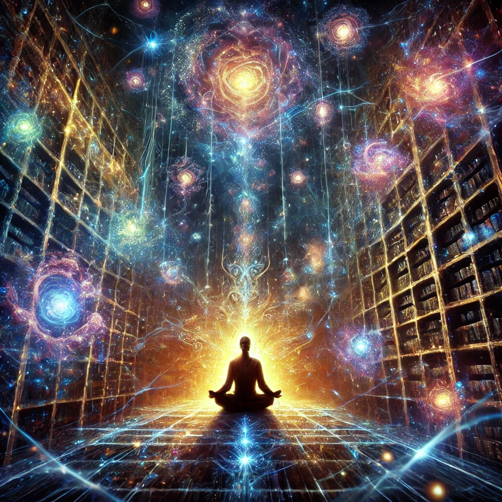

You close your eyes and release your grip on the physical world, letting your mind drift into the unseen. A wave of energy flows through you, pulling you deeper into a state of heightened awareness. Colors and shapes appear in your mind’s eye, fractals blooming and dissolving into infinite patterns.
Suddenly, the visions sharpen, revealing a kaleidoscope of realms and beings. You see an ancient library suspended in the void, its shelves lined with glowing tomes. You glimpse luminous entities weaving threads of light, each one connecting to the fabric of existence. The voice of the shaman resonates faintly:
“The visions reveal truths beyond the veil, but they are only a guide. What will you choose to see?”

What will you focus on in these visions?